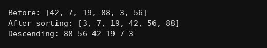

package singlearrays;
import java.util.Arrays;
public class Q023 {
public static void main(String[] args) {
int a[] = {42,7,19,88,3,56};
System.out.println("Before: "+Arrays.toString(a));
// Arrays.sort se sort ho jata hai
Arrays.sort(a);
System.out.println("After sorting: "+Arrays.toString(a));
// descending ke liye ulta print
System.out.print("Descending: ");
for(int i=a.length-1;i>=0;i--) System.out.print(a[i]+" ");
System.out.println();
}
}